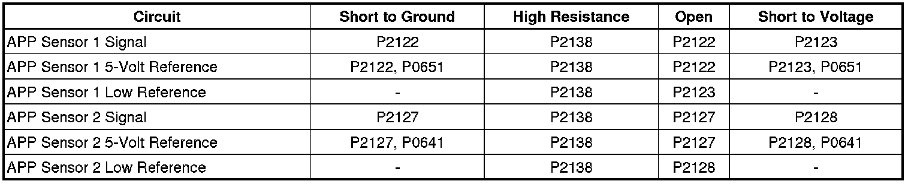
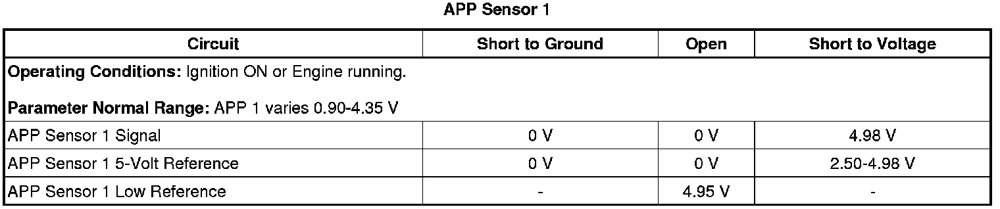
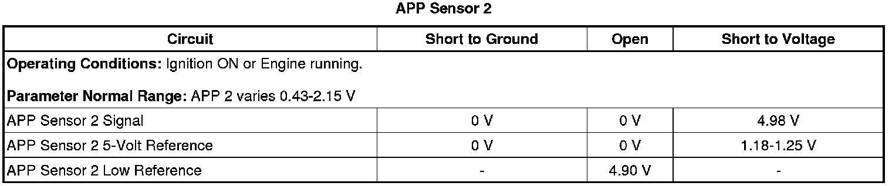

P2128
DTC P2120, P2122, P2123, P2125, P2127, P2128, or P2138
Diagnostic Instructions
* Perform the Diagnostic System Check - Vehicle (Initial Inspection and Diagnostic Overview) prior to using this diagnostic procedure.
* Review Strategy Based Diagnosis (Initial Inspection and Diagnostic Overview) for an overview of the diagnostic approach.
* Diagnostic Procedure Instructions (Initial Inspection and Diagnostic Overview) provides an overview of each diagnostic category.
DTC Descriptors
DTC P2120
- Accelerator Pedal Position (APP) Sensor 1 Circuit
DTC P2122
- Accelerator Pedal Position (APP) Sensor 1 Circuit Low Voltage
DTC P2123
- Accelerator Pedal Position (APP) Sensor 1 Circuit High Voltage
DTC P2125
- Accelerator Pedal Position (APP) Sensor 2 Circuit
DTC P2127
- Accelerator Pedal Position (APP) Sensor 2 Circuit Low Voltage
DTC P2128
- Accelerator Pedal Position (APP) Sensor 2 Circuit High Voltage
DTC P2138
- Accelerator Pedal Position (APP) Sensor 1-2 Correlation
Diagnostic Fault Information

Typical Scan Tool Data


Circuit/System Description
The throttle actuator control (TAC) system uses two accelerator pedal position (APP) sensors to monitor the accelerator pedal position. The sensors 1 and 2 are located within the pedal control assembly. Each sensor has a 5-volt reference circuit, a low reference circuit, and a signal circuit.
Two processors are also used to monitor the TAC system data. Both processors are located within the engine control module (ECM). Each signal circuit provides both processors with a signal voltage proportional to pedal movement. The processors share the monitor data to verify that the indicated APP calculation is correct.
Conditions for Running DTC
P2120, P2122, P2123, P2125, P2127, P2128
* DTC P0601, P0602, P0603, P0604, P0606, P060D, P062F, P0641, or P0651 are not set.
* The ignition is ON.
* The battery voltage is greater than 5.23 volts.
* DTC P2122, P2123, P2127, P2128 run continuously when the above conditions are met.
P2138
* DTC P0601, P0602, P0603, P0604, P0606, P060D, P062F, P0641, P0651, P2120, P2122, P2123, P2125, P2127 or P2128 are not set.
* The ignition is ON.
* The battery voltage is greater than 5.23 volts.
* DTC P2138 runs continuously when the above conditions are met.
Conditions for Setting DTC
P2120
The ECM detects that the APP sensor 1 voltage is less than 0.33 volt or greater than 4.5 volts for less than 1 second.
P2122
The ECM detects that the APP sensor 1 voltage is less than 0.33 volt for less than 1 second.
P2123
The ECM detects that the APP sensor 1 voltage is more than 4.5 volts for less than 1 second.
P2125
The ECM detects that the APP sensor 2 voltage is less than 0.33 volt or greater than 4.5 volts for less than 1 second.
P2127
The ECM detects that the APP sensor 2 voltage is less than or equal to 0.33 volt for less than 1 second.
P2128
The ECM detects that the APP sensor 2 voltage is greater than 4.5 volts for less than 1 second.
P2138
The voltage difference between APP sensor 1 and APP sensor 2 exceeds a value of 5 percent with the pedal in the released position, or 10 percent with the pedal at wide open throttle (WOT) for less than 1 second.
Action Taken When the DTC Sets
* DTCs P2120, P2122, P2123, P2125, P2127, P2128, and P2138 are Type A DTCs.
* The ECM commands the TAC system to operate in the Reduced Engine Power mode.
* A message center or an indicator displays Reduced Engine Power.
* Under certain conditions the control module commands the engine OFF.
Conditions for Clearing the MIL/DTC
DTCs P2120, P2122, P2123, P2125, P2127, P2128, and P2138 are Type A DTCs.
Reference Information
Schematic Reference
Engine Controls Schematics (Electrical Diagrams)
Connector End View Reference
Component Connector End Views (Connector Views)
Description and Operation
Throttle Actuator Control (TAC) System Description (Throttle Actuator Control (TAC) System Description)
Electrical Information Reference
* Circuit Testing (Component Tests and General Diagnostics)
* Connector Repairs (Component Tests and General Diagnostics)
* Testing for Intermittent Conditions and Poor Connections (Component Tests and General Diagnostics)
* Wiring Repairs (Component Tests and General Diagnostics)
DTC Type Reference
Powertrain Diagnostic Trouble Code (DTC) Type Definitions (Diagnostic Trouble Code Descriptions)
Scan Tool Reference
Control Module References (Programming and Relearning) for scan tool information
Circuit/System Verification
1. Ignition ON, observe the scan tool APP Sensor 1 Voltage parameter. The reading should be between 0.33-4.5 volts and change with accelerator pedal input.
2. Ignition ON, observe the scan tool APP Sensor 2 Voltage parameter. The reading should be between 0.33-4.5 volts and change with accelerator pedal input.
3. Ignition ON, observe the scan tool APP Sensor 1 and 2 parameter. The scan tool should indicate Agree.
4. Clear the DTCs with the scan tool.
5. Operate the vehicle within the Conditions for Running the DTC or within the conditions that you observed from the Freeze Frame/Failure Records.
6. Verify that the following DTCs are not set: P0641, P0651, P2120, and P2125
• If either or both DTCs P2120 or P2125 are set and they are the only DTCs set, replace the ECM.
• If DTC P0641 or P0651 is set, refer to DTC P0641 or P0651 (P0641) .
Circuit/System Testing
1. Ignition OFF for 90 seconds, disconnect the harness connector at the accelerator pedal.
2. Test for less than 5 ohms of resistance between each low reference circuit terminals A and D and ground.
• If greater than 5 ohms, test the low reference circuit for an open/high resistance. If the circuit tests normal, replace the ECM.
3. Ignition ON, test for 4.8-5.2 volts between each 5-volt reference circuit terminals C and F and ground.
• If less than 4.8 volts, test the affected 5-volt reference circuit for an open/high resistance or short to ground. If the circuit tests normal, replace the ECM.
• If greater than 5.2 volts, test the affected 5-volt reference circuit for short to voltage. If the circuit tests normal, replace the ECM.
4. Ignition ON, verify the scan tool APP sensor 1 and 2 voltages are less than 0.1 volt.
• If greater than 0.1 volt, test the APP sensor 1 and 2 signal circuits terminals B and E for a short to voltage. If the circuit tests normal, replace the ECM.
5. Install a 3A fused jumper wire between the signal circuit terminal E and the 5-volt reference circuit terminal F of the APP sensor 1. Verify the scan tool parameter APP sensor 1 voltage is greater than 4.8 volts.
• If less than 4.8 volts, test the APP sensor 1 signal circuit for an open or short to ground. If the circuit tests normal, replace the ECM.
6. Install a 3A fused jumper wire between the signal circuit terminal B and the 5-volt reference circuit terminal C of the APP sensor 2. Verify that the scan tool parameter APP sensor 2 voltage is greater than 4.8 volts.
• If less than 4.8 volts, test the APP sensor 2 signal circuit for an open/high resistance or short to ground. If the circuit tests normal, replace the ECM.
7. Ignition OFF, disconnect the harness connector at the ECM.
8. Test for less than 5 ohms of resistance on all APP sensor circuits between the following terminals:
* The ECM X1 signal circuit terminal 47 to the APP terminal E
* The ECM X1 signal circuit terminal 49 to the APP terminal B
* The ECM X1 5-volt reference circuit terminal 35 to the APP terminal C
* The ECM X1 5-volt reference circuit terminal 33 to the APP terminal F
• If greater than 5 ohms, repair the affected circuit.
9. Test for infinite resistance between APP sensor 1 signal circuit terminal E and APP sensor 2 signal circuit terminal B.
• If less than infinite resistance, repair the short between APP sensor 1 signal circuit and APP sensor 2 signal circuits.
• If all circuits test normal, test or replace the accelerator pedal.
Component Test
Dynamic Test
1. Install a 3A fused jumper wire between the 5-volt reference terminal of the applicable APP sensor and 5 volts. Install a jumper wire between the low reference terminal and a ground.
2. Sweep the sensor through the entire range while monitoring the voltage between the signal terminal and the low reference terminal with a DMM. The voltage should vary between 0.40-4.50 volts with out an spikes or dropouts.
• If the voltage is not within the specified range or is erratic, replace the accelerator pedal assembly.
Repair Instructions
Perform the Diagnostic Repair Verification (Verification Tests) after completing the diagnostic procedure.
* Accelerator Pedal Position Sensor Replacement (Service and Repair)
* Control Module References (Programming and Relearning) for ECM replacement, setup, and programming